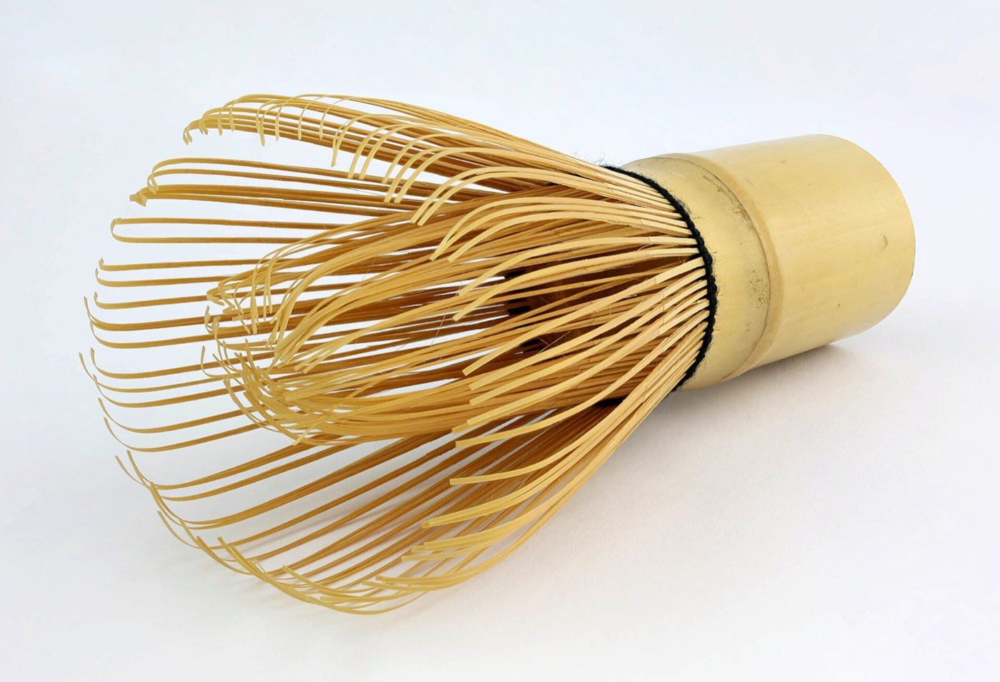

Classic 12 oz latte
- 3–4 g matcha
- 2 oz (60 ml) water at 160–175°F (70–80°C)
- 8 oz milk or plant milk, steamed or iced
- Sift the matcha into a bowl or pitcher.
- Add the water. Whisk in a “W” motion with a chasen, or use an electric frother, until smooth and foamy.
- Pour the shot into steamed milk. For an iced latte, pour it over ice and cold milk.
Avoid boiling water, which brings out bitterness. Adjust the grams to your cup size and your own milk.
Storage
Moisture, oxygen, light, heat and odors all degrade matcha.
- Unopened: keep in the refrigerator or freezer.
- Before opening: let the bag reach room temperature first, so condensation does not form on the powder.
- After opening: keep it sealed in a lightproof container somewhere cool and dark, and use it within about 1–2 weeks for the best color and aroma.
- Choosing a size: pick a bag you will finish quickly. Two 500 g bags hold up better than one 1 kg bag opened for weeks.
Caffeine, for your menu notes
Matcha naturally contains caffeine and the amino acid L-theanine. Japan’s Standard Tables of Food Composition list 3.2 g of caffeine per 100 g of matcha, or about 64 mg per 2 g. A 3–4 g latte shot works out to about 96–128 mg.

Sources
Taste it in your own drinks
Request a sample, or ask about pricing and pack sizes.